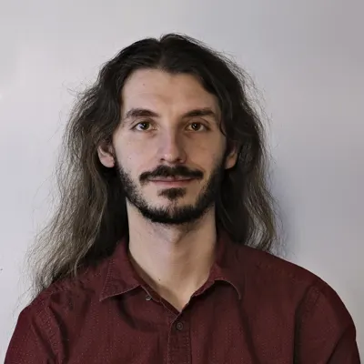
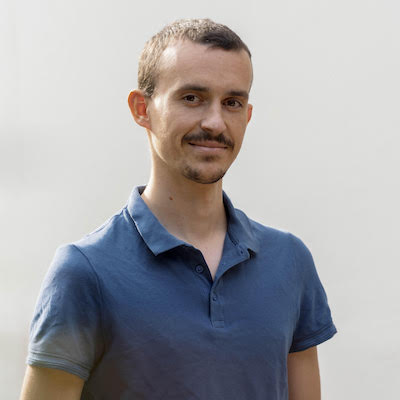
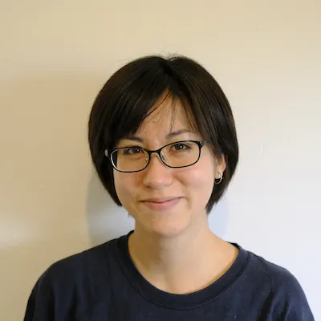
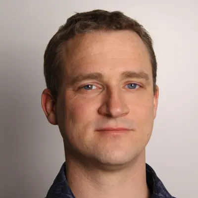
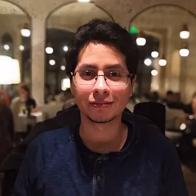
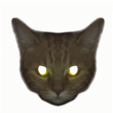
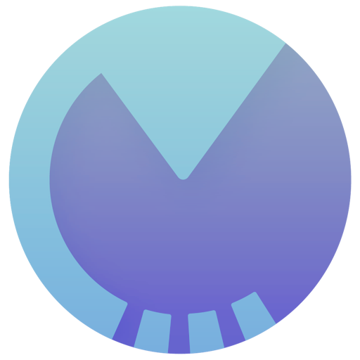
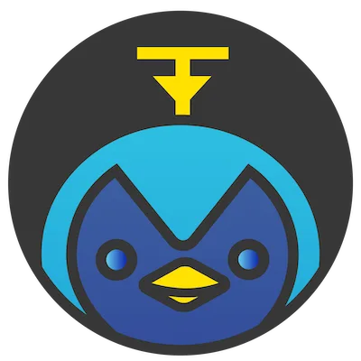
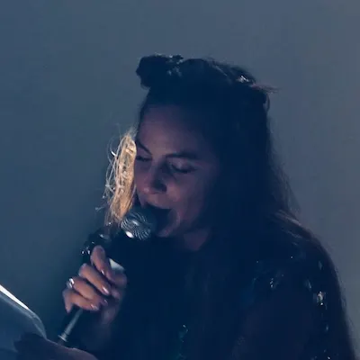
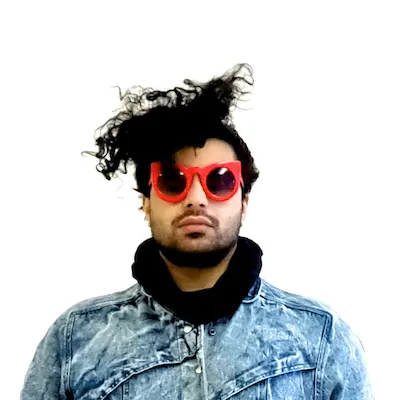

About ossia
France

Jean-Michaël Celerier
Lead developer. A freelance researcher, interested in art, code, computer music and interactive show control.
Pia Baltazar
Intermedia composer (The
Baltazars duo). She coordinates the ossia organization. She has contributed to the visual syntax and interaction design of score and to the specification design of the libossia namespace model.

Thibaud Keller
Preacher, workshop conductor, creator of ossia-sclang Quark.
He gives workshops, conduct residencies and collect user experiences focused on score and the ossia environnement.

Akané Lévy
UI designer, website graphic designer and sometimes developer.

Antoine Villeret
Creator of interactive artworks and experienced software engineer. He is the main developer of ossia-max and ossia-pd.

Jaime Arias
CNRS research engineer interested in applying formal methods to interactive multimedia.

Julien Rabin
Musician, composer, involved with ossia since the very beginnings of the project. Julien is currently involved with writing the documentation for score and is an ossia-max expert.

Mathieu Chamagne
Mathieu Chamagne invents virtual spaces to be discovered and explored using digital devices. With a piano background, he has been developing a musical practice around electroacoustic instruments since the 90s.
Vincent Goudard
Researcher and maker crafting digital musical instruments for audio/visual live performances, installations and interactive applications.
Pierre Cochard
Intermedia creator and musician, he has helped creating multiple artworks and pieces with i-score and ossia score.

Oscar
Full-time mascot. Interested in the design of time and space.
Canada
Evan Montpellier
Evan Montpellier, coordinator of the Canadian non-profit, is a musician and artist based in Montréal, Québec. Working mainly with selfbuilt software and electronic instruments, Evan creates live video and sound performances, recorded music and interactive artworks.

Ashley Obscura
Ashley Obscura is a multidisciplinary poet, writer and publisher. She is the founder and managing editor of Metatron Press, the author of Ambient Technology and I Am Here, and the scriptwriter of experimental video games Oceanarium, Songs of the Lost, and Museum of Symmetry.

Navid Navab
A media alchemist, multidisciplinary composer, audiovisual sculptor, phono-menologist, perSonifier, gestureBender, and interdisciplinary artist-researcher. Interested in the poetics of schizophonia, gesture, materiality, and embodiment, his work investigates the transmutation of matter and the enrichment of its inherent performative qualities.
Travis West
Travis West is a multidisciplinary programmer, composer-performer, and musical instrument designer. His research explores the design of gestural interfaces, sound synthesis algorithms, and the mappings made between the two.
Peter van Haaften
Peter van Haaften is a multidisciplinary composer based in Montreal. He creates live performances, interactive installations, and fixed media for speakers.
Kıvanç Tatar
Kıvanç Tatar is a musician, new media artist, and researcher focusing on Artificial Intelligence for Music and Interactive Media.
Contributors
score and libossia are specified, developed, documented and tested by a team of collaborators, that has been growing over the years.
Each of us is somehow a different mix between an artist and an developer, and we are all passionate about creating tools for improving our creative workflows, and sharing those with others.
The current core team is composed of:
- Jean-Michaël Celerier: Lead developer and software architect
- Antoine Villeret: libossia (ossia-pd/max and more) and score developer
- Pia Baltazar: Coordination, specifications and some user interface design
- Julien Rabin: Documentation, specifications and some user interface design
- Akané Lévy: Graphic, website and user interface design, initial ofxOssia development
- Thibaud Keller: ossia-superCollider, development, user feedback and more
- Pierre Cochard: ossia-superCollider development, user feedback & beta-test,
- Thomas Pachoud: Specifications, user feedback & beta-test, ofxOssia development
- Renaud Rubiano: ossia-python specifications, user feedback & beta-test
We owe a lot to previous developers, notably:
- Théo De La Hogue: ossia-python development, and previous OSSIA API development
- Nicolas Vuaille, LaBRI: Graphical interface development
- Clément Bossut, LaBRI: OSSIA API specification
- Raphaël Marczak, LaBRI: Main developper of the Virage engine, score proof of concept
And also to the initiators of the Virage/i-score sequencers:
- Myriam Desainte-Catherine, LaBRI: Scientific advising
- Jean-Michel Couturier, Magnolya Roy, Blue Yeti: graphical interface design
Many individuals and structures have supported the project along its various mutations and incarnations. It’s impossible to cite them all, but we’re very grateful to them!
Among them: Georges Gagneré, didascalie.net ; Thierry Besche, GMEA ; Yves Bernard, iMal…
The complete list can be found below:
Supporting organizations
Development has been supported over the years by many organizations and grants:
With additional support and contributions of other organizations, such as:
- GMEA
- L’Arboretum
- didascalie.net
- StudioMirio